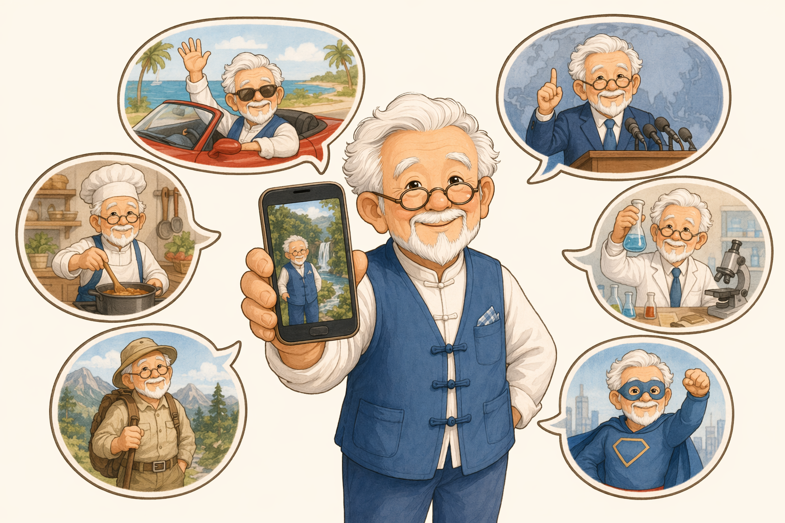

套路 ②
一张图片，不等于一个事实
同一张图，能被编成一百个故事：旧图说成刚发生、外地说成本地、截图改了标题、干脆 AI 直接画一张。
图片只能证明「有这张图」，不能证明「配的字是真的」。
看到图，查四样：最早何时出现 · 原本发生在哪 · 有无完整报道 · 官方发了没。
群里常见这样
一张菜市场照片配字：「本地今早刚拍到，这种鱼千万别买，吃了会中毒！」
🔎 破绽：一搜才发现，是三年前外地的旧图，被换了地名反复发。
